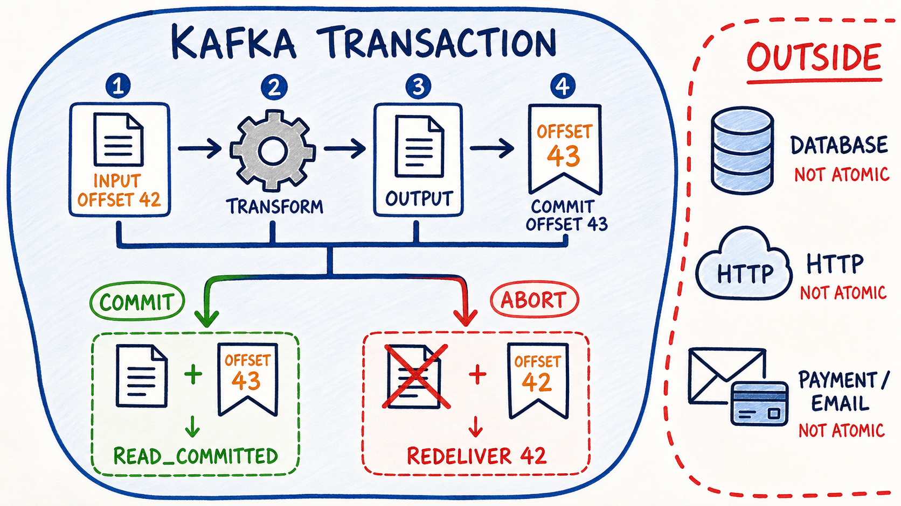

Boundary
Vẽ đúng Kafka records và offsets nằm trong transaction.
Transaction có thể commit hoặc abort Kafka output records và consumer offsets cùng nhau. Điều đó rất mạnh cho consume–transform–produce, nhưng không biến database, HTTP hay payment thành một phần của Kafka transaction.
Vẽ đúng Kafka records và offsets nằm trong transaction.
Dự đoán output visibility và restart offset khi listener fail.
Phân biệt read_committed và read_uncommitted.
Không gán nhầm guarantee Kafka cho DB/HTTP/payment.

read_committed.Transactional producer mở transaction có transactional.id.
Output records và offset kế tiếp được thêm vào cùng transaction.
Commit làm cả hai có hiệu lực; abort làm cả hai không có hiệu lực.
Input offset 42 tạo output rồi muốn commit offset 43. Chọn kết quả transaction và xem hai state thay đổi cùng nhau.
Output và offset sẽ cùng commit hay cùng abort? DB có rollback theo không?
Log vật lý vẫn có aborted records và transaction đang mở. Consumer isolation quyết định cái gì được trả về.
read_committed, record nằm sau transaction đang mở có thể tạm thời bị giữ lại, dù bản thân nó không transactional. Vì vậy consumer có thể chưa đọc tới high watermark.Nhấn từng operation. “Có Java code trong cùng method” không đồng nghĩa “cùng transaction coordinator”.
| Operation | Trong Kafka transaction? | Điều kiện / thay thế |
|---|---|---|
| Records tới nhiều topic/partition cùng cluster | Có | Cùng transactional producer/transaction. |
| Offsets của consume–transform–produce | Có | sendOffsetsToTransaction(...) và commit transaction. |
| Database | Không atomic bởi Kafka | Transaction synchronization vẫn có crash window; cân nhắc outbox/idempotency. |
| HTTP, email, payment | Không | Thiết kế idempotency key, saga/compensation hoặc event-driven handoff. |
| Kafka cluster khác | Không cùng transaction này | Cần replication/pipeline và semantics riêng. |
initTransactions() gọi một lần sau khi tạo producer; mỗi unit of work đi từ begin đến commit/abort.
initTransactions()oncebeginTransaction()per unitsend(...)stage outputsendOffsetsToTransaction(...)stage next offsetscommitTransaction()atomic outcomeQuan sát lifecycle và thử abort giữa chừng.
Lab này dùng Kafka client trực tiếp để thấy rõ framework đang làm hộ điều gì.
consumerProps.put(ConsumerConfig.ENABLE_AUTO_COMMIT_CONFIG, false);
consumerProps.put(ConsumerConfig.ISOLATION_LEVEL_CONFIG, "read_committed");
consumerProps.put(ConsumerConfig.GROUP_ID_CONFIG, "orders-eos-java-v1");producerProps.put(ProducerConfig.TRANSACTIONAL_ID_CONFIG,
"orders-eos-java-instance-1");
// transactional.id implies enable.idempotence
try (var producer = new KafkaProducer<String, String>(producerProps)) {
producer.initTransactions(); // đúng một lần cho producer này
// TODO: poll loop
}Mỗi instance đang chạy phải có transactional id riêng để tránh fencing lẫn nhau.
var records = consumer.poll(Duration.ofSeconds(1));
if (!records.isEmpty()) {
producer.beginTransaction();
try {
for (var record : records) {
String output = transform(record.value());
producer.send(new ProducerRecord<>(
"orders.eos.out", record.key(), output));
}
producer.sendOffsetsToTransaction(
records.nextOffsets(), consumer.groupMetadata());
producer.commitTransaction();
}
catch (KafkaException failure) {
producer.abortTransaction();
// TODO: rewind consumer position về committed offsets
}
}for (TopicPartition partition : records.partitions()) {
OffsetAndMetadata committed = consumer.committed(partition);
if (committed != null) {
consumer.seek(partition, committed.offset());
}
else {
// TODO: quyết định theo reset policy/lab setup
}
}Abort không tự đưa in-memory consumer position quay lại; Spring listener container xử lý reposition/AfterRollbackProcessor cho bạn.
ProducerFencedException cho biết instance khác chiếm cùng transactional.id/epoch. Đóng producer và sửa identity/lifecycle; đừng lặp vô hạn.
// TODO 1: happy path -> output visible + offset advances
// TODO 2: throw after send -> no read_committed output
// TODO 3: after abort -> input delivered again
// TODO 4: recovery run -> one committed outputspring:
kafka:
bootstrap-servers: localhost:9092
producer:
transaction-id-prefix: "orders-${INSTANCE_ID:local}-"
consumer:
group-id: orders-eos-spring-v1
enable-auto-commit: false
properties:
isolation.level: read_committedSpring Boot tự cấu hình KafkaTransactionManager và gắn vào default listener factory khi property này tồn tại.
@KafkaListener(topics = "orders.eos.in")
void transform(ConsumerRecord<String, OrderCreated> input) {
OrderValidated output = validate(input.value());
kafkaTemplate.send("orders.eos.out", input.key(), output);
if (crashSwitch.failAfterSend(input.value().eventId())) {
throw new IllegalStateException("lab: abort after send");
}
}Container bắt đầu transaction trước listener. KafkaTemplate cùng producer factory tham gia; listener return thì offsets được gửi vào transaction rồi commit.
Với transactional container, offsets được gửi vào transaction theo record/batch listener semantics. Tập trung vào việc method return hoặc throw.
@KafkaListener(
topics = "orders.eos.out",
groupId = "orders-output-read-committed-v1",
properties = "isolation.level=read_committed")
void observeCommitted(OrderValidated output) {
// TODO: count theo eventId
}kafkaTemplate.executeInTransaction(ops -> {
ops.send("topic-a", "A");
ops.send("topic-b", "B");
return null;
});Nó gộp các Kafka sends trong callback, nhưng không tự gắn offsets của một consumer tùy ý. Consume–transform–produce nên để container transaction làm đúng lifecycle.
Transactional listener throw sẽ rollback. Dùng DefaultAfterRollbackProcessor để backoff/recover record lặp lỗi; non-blocking @RetryableTopic không kết hợp với container transactions.
read_committed, không phải số lần Java method được gọi.Chỉ chạy trên database/topic lab. Mục tiêu là quan sát crash window, không phải mẫu production.
create table eos_boundary_audit (
event_id varchar(100) primary key,
note varchar(200) not null
);@Transactional(propagation = Propagation.REQUIRES_NEW)
public void commitAudit(String eventId) {
auditRepository.insert(eventId, "DB committed before Kafka outcome");
}@KafkaListener(topics = "orders.eos.boundary.in")
void demonstrate(OrderCreated event) {
auditService.commitAudit(event.eventId());
kafkaTemplate.send("orders.eos.boundary.out", event.eventId(), event);
throw new IllegalStateException("abort Kafka only");
}DB có một row; output read_committed không thấy record; input group offset không tiến và record được giao lại.
Spring có thể synchronize DB/Kafka transaction theo thứ tự, nhưng nếu transaction thứ hai commit fail sau transaction thứ nhất đã commit thì cần remedial/compensation. Đây không phải XA atomicity.
orders.eos.in và orders.eos.out; chạy consumer output read_committed và một consumer lab read_uncommitted.
Gửi evt-eos-ok. Bằng chứng: output committed nhìn thấy; input group offset tiến từ 42 lên 43.
Gửi evt-eos-abort, bật crash switch. Listener throw sau send.
read_uncommitted có thể nhìn thấy aborted output; read_committed không thấy. Record aborted vẫn chiếm vị trí trong log vật lý.
Committed offset không tiến; container reposition và giao lại input theo rollback policy.
Lần xử lý lại commit thành công. Consumer read_committed thấy đúng committed result.
Chạy hai instances với cùng transaction-id-prefix. Quan sát fencing rồi sửa để mỗi instance có prefix riêng.
transaction commit/abort rate, transaction duration, producer fenced count, rollback/recovery count, LSO lag và consumer lag.
topic/partition/offset, group committed offset, redelivery count.
transactional.id prefix, commit/abort, exception, duration.
read_committed vs uncommitted visibility và eventId count.
KafkaTemplate.send thì sao?read_committed?read_uncommitted trả cả transactional records đã abort, làm lộ “ghost output”.transactional.id có tác dụng gì?executeInTransaction có tự đưa consumer offsets vào không?Vẽ bong bóng Kafka transaction và đặt output, offsets, DB, HTTP đúng vị trí. Giải thích commit/abort cho offset 42.
isolation.level, read_committed và Last Stable Offset.